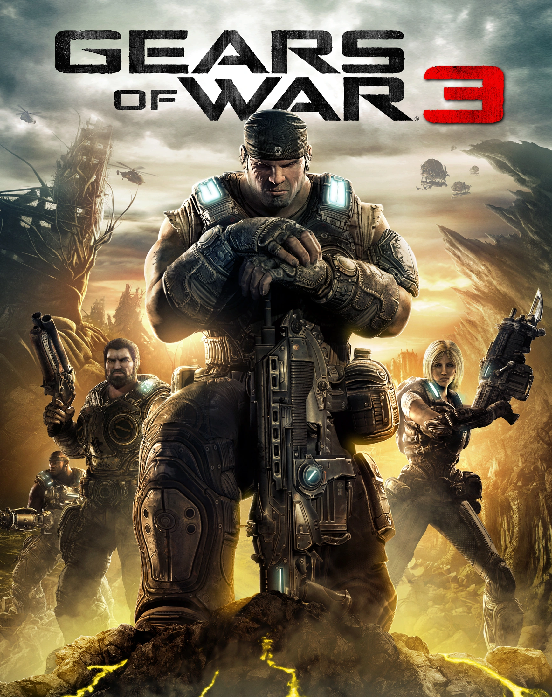

1: Gears Of War 3

Gears of War 3 es un videojuego de disparos en tercera persona, del género videojuego de terror y acción-aventura, desarrollado por Epic Games y publicado por Microsoft
Game Studios exclusivamente para Xbox 360. Es la tercera entrega de la serie Gears of War y el juego final en la historia del arco.
2: Lost Odyssey
Segundo proyecto del estudio Mistwalker (Blue Dragon), equipo que encabeza Hironobu Sakaguchi, padre de la saga Final Fantasy, y que en este título presenta un
formato RPG de corte oriental en exclusiva para XBox 360.
3: Halo 3
Halo 3 es un videojuego de disparos en primera persona desarrollado por Bungie Studios exclusivamente para la videoconsola Xbox 360 y posteriormente en Xbox ONE y PC
en el recopilatorio Halo: The Master Chief Collection El juego es el tercer título de una serie que empezó con Halo: Combat Evolved y siguió con Halo 2.
4: Rice Of The Tomb Raider
Rise of The Tomb Raider es un videojuego de acción-aventura . Es el undécimo videojuego de la serie Tomb Raider. Es la secuela
directa de Tomb Raider, triplicando el tamaño total de sus escenarios y narra la como sigue la vida de Lara Croft
5: Mass Effect
Mass Effect es una franquicia de medios de ciencia ficción militar creada por Casey Hudson. La franquicia representa un futuro distante donde la humanidad
y varias civilizaciones alienígenas han colonizado la galaxia utilizando tecnología dejada por civilizaciones precursoras avanzadas.